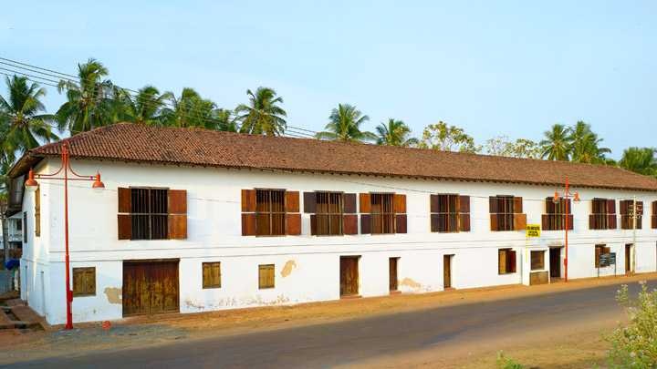

The City of Looms and Lores
Kannur is a coastal city in the south Indian state of Kerala. It was once an ancient trading port. Enduring monuments such as 16th-century St. Angelo Fort, once occupied by European colonial forces, show the city’s significant role in the spice trade.
Top Destinations

Payyambalam Beach
The impeccably unspoilt Payyabalam beach is adorned with sparkling pearls of golden sand and foamy white waves of the Arabian Sea. The highlight of Kannur and one of the many beautiful beaches of Kerala, it has an incredibly peaceful and inviting aura.

Muzzhapilangad Beach
The Muzzhapilangad Drive-in Beach at Kannur is one referred to with many superlatives- as the longest drive-in beach in the whole of India, as one of the cleanest beaches of Kannur and most importantly, as one of the best drive-in beaches that the entire Asian continent has to offer.

St Angelo's Fort
St Angelo's Fort is definitely one of the most popular and frequently visited attractions of Kannur and for more reasons than one. The polished yet prehistoric structure of this fortress oozes with unadulterated elegance and overwhelming power.

Kannur Lighthouse
Being Kerala's first lighthouse ever and Kannur's only one, the Kannur Lighthouse is a pretty big deal. This cylindrical concrete tower has a balcony with a light that is lit as the evening breaks in to alert the seamen of the land.

Parassinikkadavu Snake Park
Regarded as one of the finest snake sanctuaries of Asia, the Parassinikadavu Snake Park is the pride of the south. This snake park is one of the most prominent reptile preservation centres in the country and is the only one in Kerala.

Baby Beach
The Baby Beach in Kannur, as the name suggests, is a tiny yet an extremely attractive beach along the shore of the Arabian Sea. Don't be mistaken by its name or size, this beach is a very happening picnic spot for the locals of Kannur and attracts the attention of many tourists with its panoramic view of the azure Arabian Sea.

The Arakkal Museum
The Arakkal Museum in Kannur city is one of the most significant and frequently visited attractions of the south that celebrates the memory and grandeur of Kerala's only Muslim royal family- the Arakkal Ali Rajas

Palakkayam Thattu
Tucked away in the lush greenery of the Western Ghats and soaring at a dizzying altitude of 3500 feet above sea level, Palakayyam Thattu is one of the most beautiful hill stations in the entire state of Kerala.

Madayipara
Poomala Dam is an irrigation purpose dam and a tourist spot situated in Mulankunnathukavu Panchayath under Puzhakkal block in Thrissur, Kerala State of India.Perched up on a hillock near Pazhayagandi in the scenic city of Kannur, Madayipara is renowned as one of the most beautiful landscapes in the entire state of Kerala. Often compared with the famous Tulip Gardens of Amsterdam, Madayipara is better known as 'the land of flowers'.

Ezhimala
Ezhimala, once served as the capital of erstwhile Mooshika kings, today it is a site of great historical significance. The land has been witness to many great events from war of Chola-Chera to headquarters of the Ezhimala Radii.